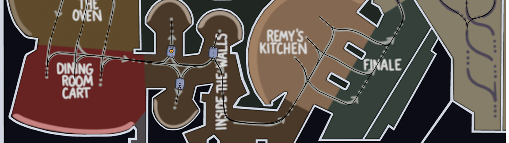
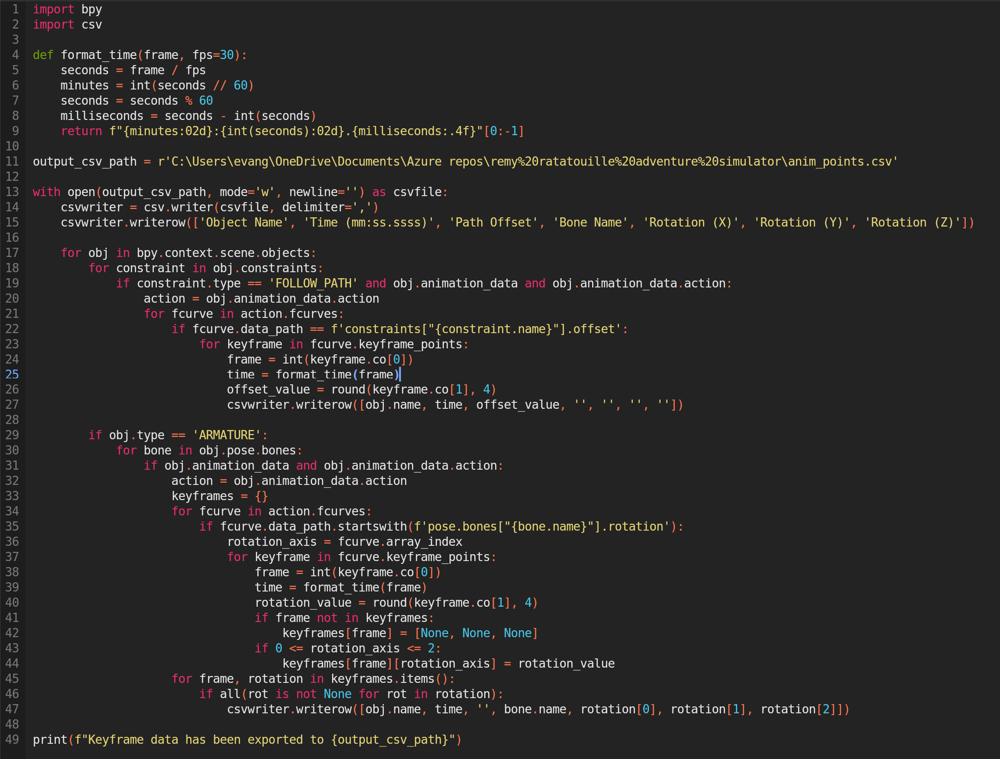
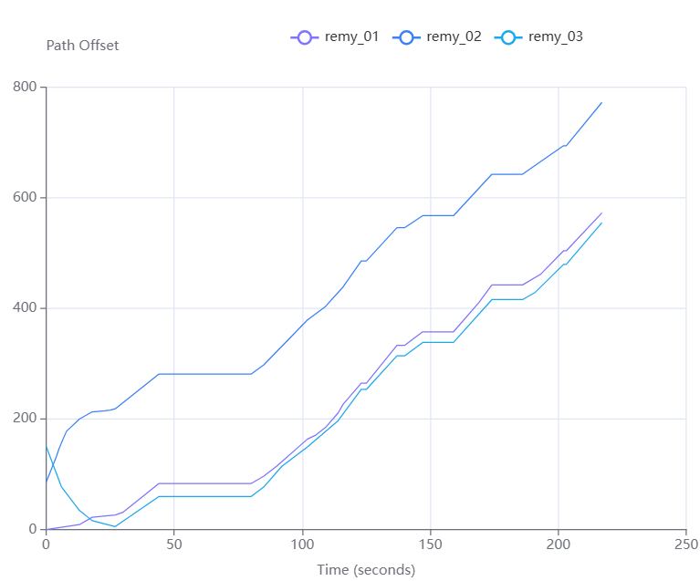

Remy's Ratatouille Adventure Simulator
A trackless dark-ride simulation of Disney's Remy's Ratatouille Adventure, rebuilt in Blender from real ride blueprints and POV footage.

Building the ride
Using this blueprint of the ride, I modeled the layout in Blender. I built the ride vehicles starting from this model, rigged them for rotation and tilt control, and created the vehicle paths by studying ride POV videos.
Animating to the real ride
By syncing ride POV videos to my Blender sequence, I keyframed the vehicles to move along their paths at the same pace as the real ride — including each vehicle's tilt and rotation, using the videos as reference.
Extracting engineering data
With the ride animated, this Python script fetches every vehicle's path-distance data along with the armature's rotation data — the numbers you would actually need to build the ride from an engineering standpoint.

The output appears as follows:
We can visualize this data by filtering and graphing. This graph shows each vehicle's offset and distance through their paths across time.
